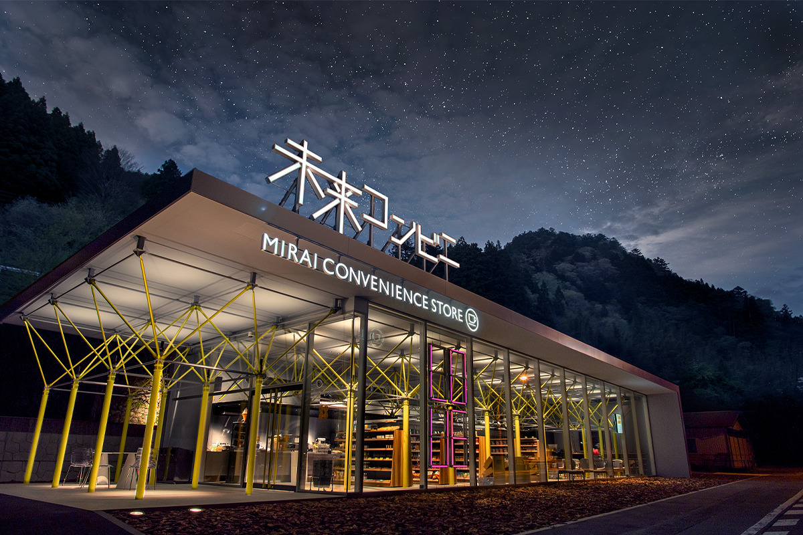
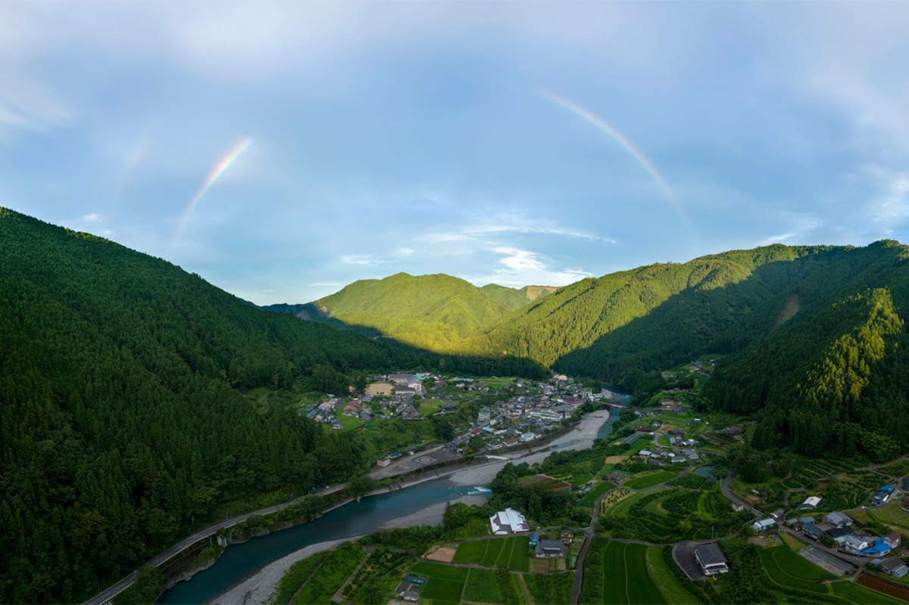
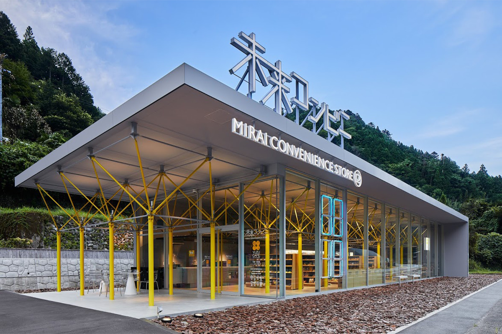
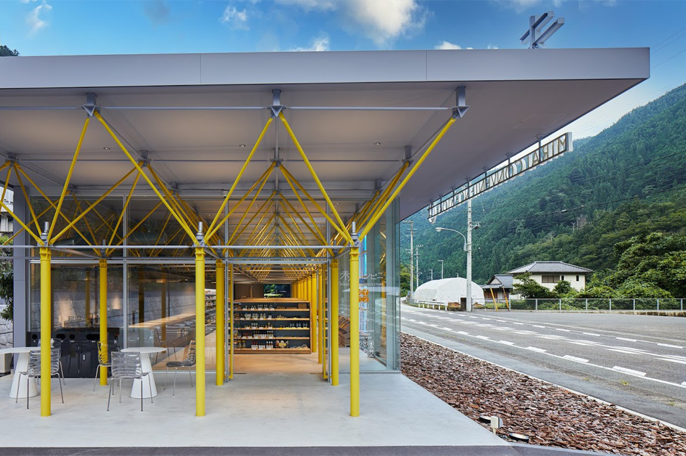
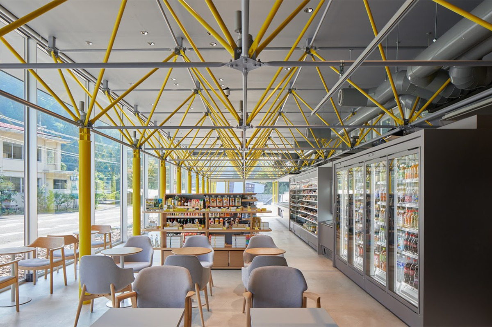
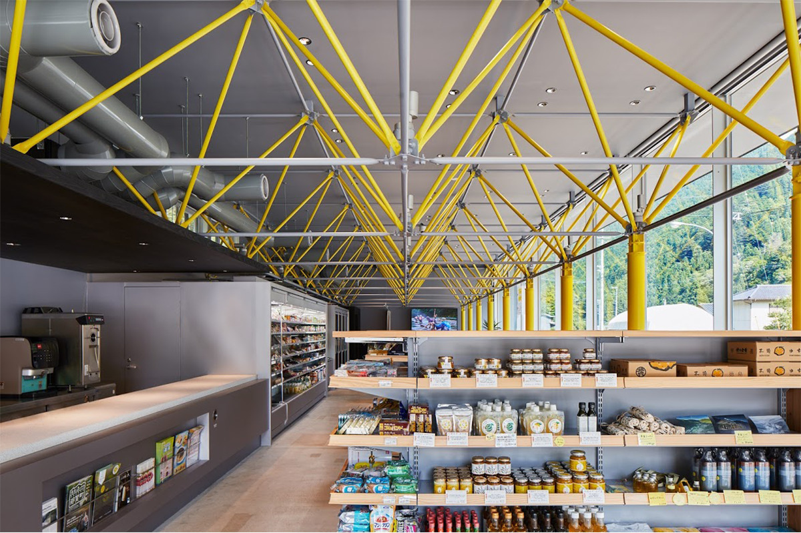
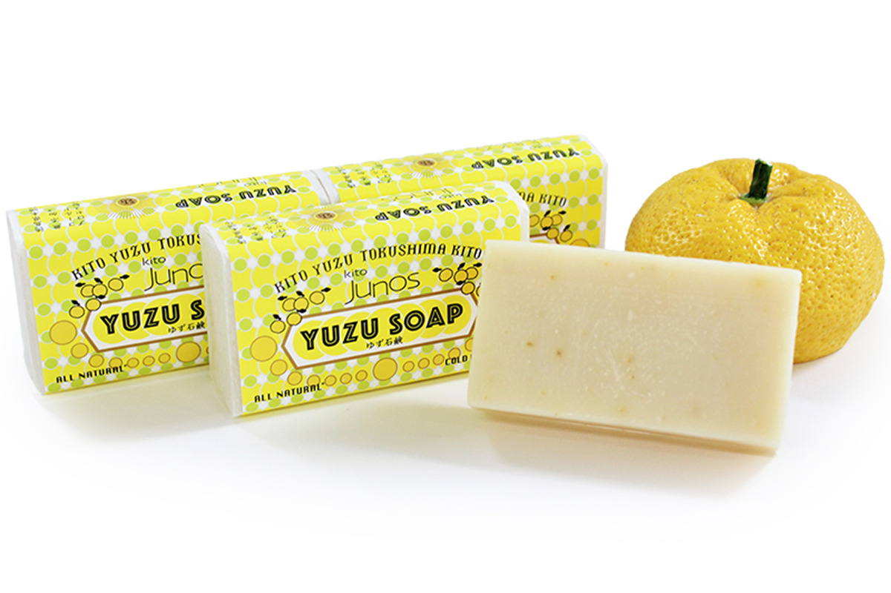
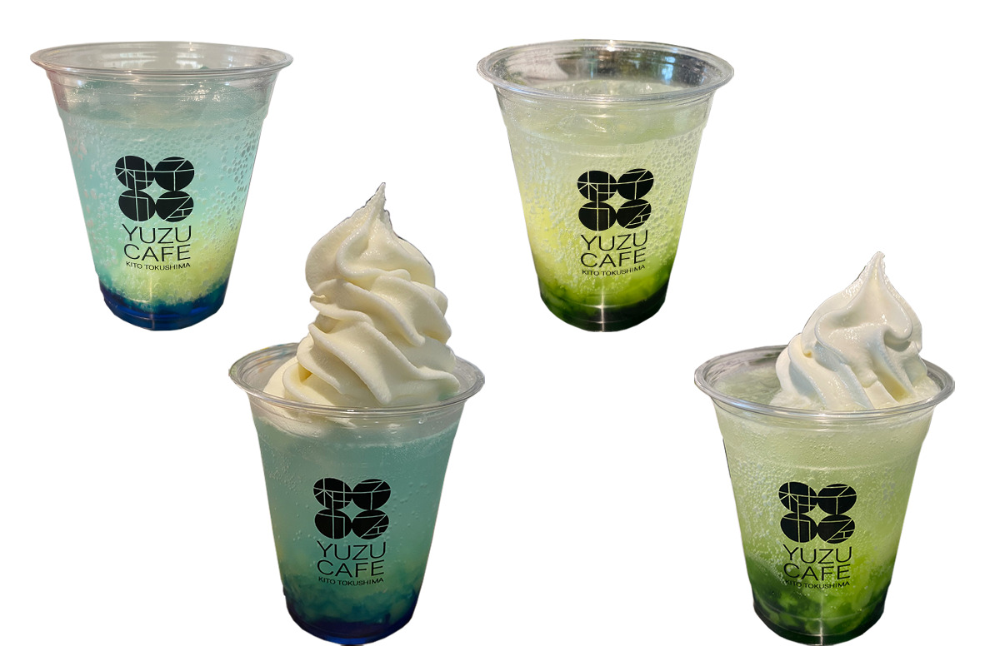
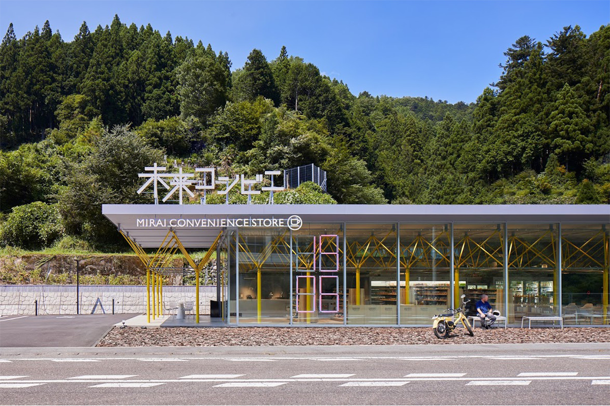

Префектура Токусима · Кито · архитектура
«Мирай-комбини»: самый красивый магазин Японии в горной деревне Кито

В горах на юге Токусимы живут около тысячи человек, а до ближайшего супермаркета час езды на машине. Здесь, у самой границы с Коти, построили магазин, который его создатели называют самым красивым в мире.
Возрождение
Как в горной деревне появился магазин
Район Кито, бывшая деревня на границе префектур Токусима и Коти, раскинулся в горах на юге. Здесь живут около тысячи человек, и больше половины из них старше 65 лет. Из конца в конец по этой обширной территории можно проехать не меньше получаса на машине.

Дальше к западу, в самой дальней части района, стоит посёлок Китакава, где осталось всего около двухсот жителей. Магазинов здесь нет, а до ближайшего супермаркета ехать на машине около часа. Из-за этого местные жители, которым трудно выбираться в город, годами оставались без простых покупок.
Магазин «Мирай-комбини» появился именно здесь. Его название переводится как «комбини будущего»: создатели хотели не только вернуть людям возможность покупать продукты рядом с домом, но и сделать место, где дети из этих гор смогут встретиться с разными людьми и увлечениями и получить толчок к собственному будущему. Имя магазину подсказали слова Осаму Тэдзуки (1928–1989), классика японской манги, автора «Астробоя»: «Дети пришли из будущего».
Прежде здесь была просто дорога мимо, а теперь появилась точка, ради которой стоит остановиться. Магазин связал жителей деревни с теми, кто проезжает через горы, и стал частью большого проекта по возрождению Кито, задуманного как ответ на опустение и старение деревни.
Архитектура
Дизайн с мотивом юдзу
Кито лежит на южном склоне горы Цуруги, второй по высоте в западной Японии, и окружён хребтами выше тысячи метров. За богатство природы эти места называют «Тибетом Сикоку». Здесь сохранились целые рощи дикого юдзу, и именно в Кито впервые в Японии удалось привить это дерево и распространить его выращивание по всей стране. Местный юдзу ценят за качество далеко за пределами префектуры.

Сам дом построен по теме сосуществования с природой. Каркас из вилообразных стоек окрашен в ярко-жёлтый, как плантации юдзу, а стена, обращённая к дороге, сделана полностью стеклянной. Снаружи землю укрыли щепой из японской сосны: она пропускает воду и со временем меняется, а изнутри через стекло видно дождь и зелень гор.

Полки здесь ниже, чем в обычном магазине, чтобы дети и пожилые люди легко дотягивались до товаров. В глубине зала открыто кафе с местным меню, а рядом есть уголок, где дети листают книжки с картинками и смотрят фильмы о Кито. Из-за этого магазин стал любимым местом встреч и своего рода символом района.


Кафе
«Юдзу кафе»: меню из местного юдзу
В кафе при магазине готовят напитки и десерты из здешнего юдзу, которых больше нигде не попробовать. Рядом продают товары «Огон-но мура», компании, которая производит и перерабатывает юдзу из Кито, так что здесь легко выбрать сувенир.
Мороженое с фермы Накахора
Мягкое мороженое сделано из молока коров, которые пасутся на воле на молочной ферме Накахора в префектуре Нагано. Густое и сливочное, оно задумано как «лучшее мороженое для детей Кито».
Цена: 450 иен с налогом.
Шот юдзу из Кито первого отжима
Свежий сок юдзу отжимают вручную и подают как шот, без добавок, сохраняя густой аромат. В стакане много витаминов, а мягкая кислота освежает.
Цена: 200 иен с налогом.
Мыло с юдзу «Огон-но мура»
В мыле соединены эфирное масло, вода из кожуры и сок юдзу из Кито. Его делают холодным способом без добавок, поэтому в нём много природного глицерина, а кожа после умывания остаётся мягкой. Свежий запах юдзу успокаивает.
Цена: 1 320 иен с налогом.

В 2021 году проект получил премию Red Dot Design Award в разделе дизайна магазинов и её высшую степень «Лучшее из лучшего». Всего у «Мирай-комбини» двенадцать международных наград за архитектуру и оформление.
По случаю награды в кафе придумали два напитка. «Синий Нака» повторяет цвет чистой реки Накагава и ночного неба Кито, «зелёный Кито» берёт зелень листьев юдзу и здешних лесов. Оба сделаны на газированной воде, с желе из цитрусов и кусочками плода. Если добавить шарик мороженого, получится версия с мороженым.
Напитки: 480 иен. С мороженым: 680 иен.

По пути
Остановка на дороге 195
Если ехать между Токусимой и Коти по национальной дороге 195, стоит сделать остановку у строгого и устремлённого в будущее здания. Сегодня «Мирай-комбини» держит жизнь целого района: здесь проводят викторины и встречи для детей, а покупателей призывают брать продукты с истекающим сроком годности, чтобы меньше еды выбрасывалось. Магазин появился ради улыбок местных жителей, и сюда действительно хочется завернуть.

Мирай-комбини
- Адрес
- префектура Токусима, уезд Нака, посёлок Нака, Кито-Китакава, Имосиясики, 11-1
- Телефон
- +81 884-69-2620
- Часы работы
- 9:00–18:00
- Выходные
- среда
- Сайт
- mirai-cvs.jp